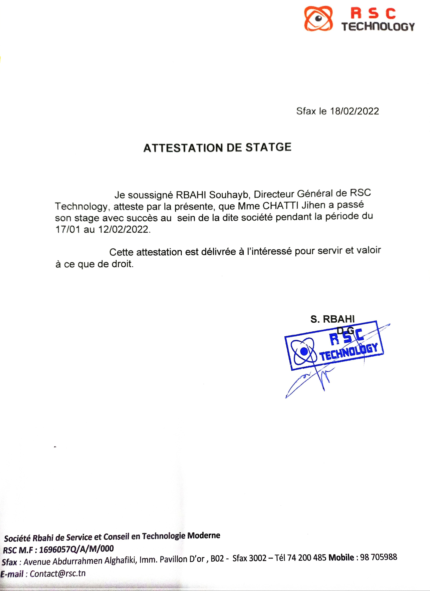
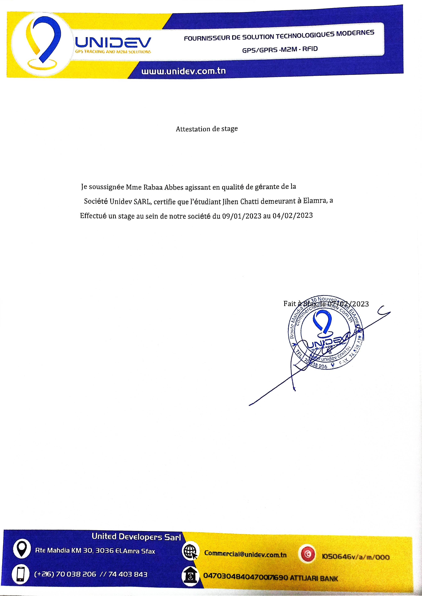
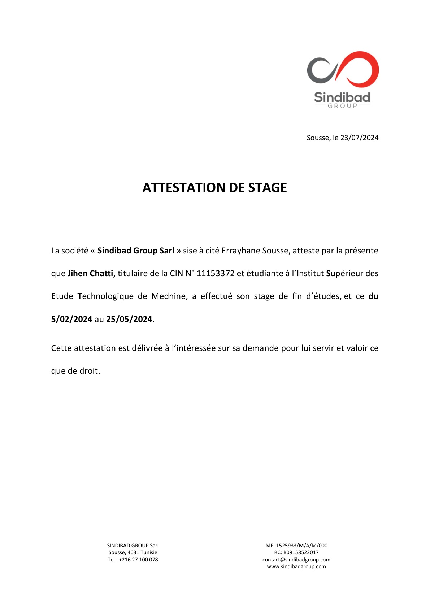

| Stage | Description | Attestation |
|---|---|---|
| Stage 1 : Initiation chez RSC Technologie | Mon premier stage d'initiation s'est déroulé chez RSC Technologie, où j'ai acquis des bases dans le domaine de la technologie et une compréhension des processus techniques. |  |
| Stage 2 : Technicien chez Unidev - Site web Teletrack | Pendant mon deuxième stage en tant que technicien, j'ai travaillé avec Unidev sur le projet du site web Teletrack, ce qui m'a permis d'approfondir mes compétences en développement web. |  |
| Stage 3 : PFE chez Sindibad Group - Leoni | Mon projet de fin d'études (PFE) a été réalisé au sein de Sindibad Group de Leoni. J'ai développé une application web pour la gestion de la structure d'une société spécialisée dans la confection de câblage automobile. |  |